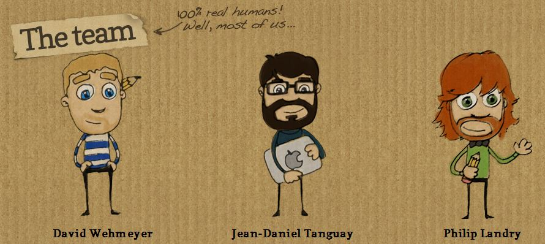

1998 yılında "E-kitap teknolojilerini kullanarak
müşterilerine dünya standartlarında çözümler sunmak" ilkesiyle yola çıkan
isimtescil.net, geçen 16 yıllık süreçte
Dünya ve Türkiye’ye,
en büyük online kitap firmalarından biri olmayı başarmıştır.
2008 yılında alan adları standartlarını belirleyen ve denetleyen
tek otorite ICANN'e akredite olan isimtescil.net,
2010 yılından beri Türkiye'nin en büyük 500 e-kitap şirketi
arasında yer almakta ve kurulduğu günden buyana
1 milyonun üzerinde pdf kitap
barındırma hizmetne ev sahipliği yapmıştır.